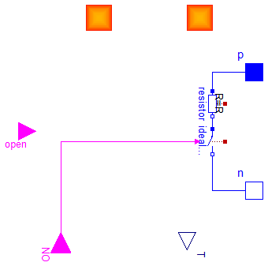

Extends from Modelica.Icons.BasesPackage (Icon for packages containing base classes).
| Name | Description |
|---|---|
| Refrigerator_powers |

| Type | Name | Default | Description |
|---|---|---|---|
| Power | Pnom | 90 | Compressor power [W] |
| Voltage | Vnom | 220 | Nominal voltage [V] |
| Resistance | R | Vnom^2/Pnom | Compressor resistance [Ohm] |
| Volume | Vi | 0.3 | Refrigerator internal capacity [m3] |
| HeatCapacity | Ci | 1008*Vi | [J/K] |
| HeatCapacity | Cev | 0.5 | [J/K] |
| HeatCapacity | Ccond | 0.5 | [J/K] |
| ThermalConductance | Guf | 5 | Thermal conductance for opening of the door [W/K] |
| ThermalConductance | Gr | 2 | [W/K] |
| ThermalConductance | Gi_ev | 0.05 | [W/K] |
| Type | Name | Description |
|---|---|---|
| input BooleanInput | ON | |
| input BooleanInput | open | |
| HeatPort | ef | |
| HeatPort | er | |
| output RealOutput | T | |
| PositivePin | p | |
| NegativePin | n |